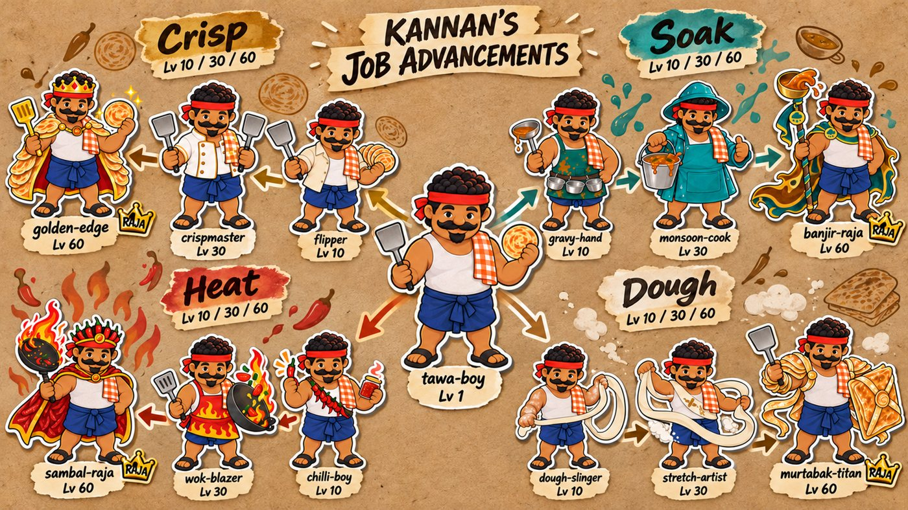
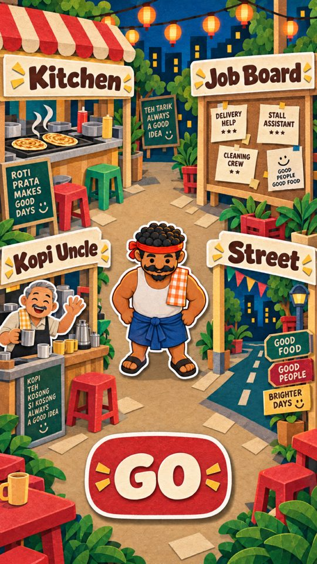
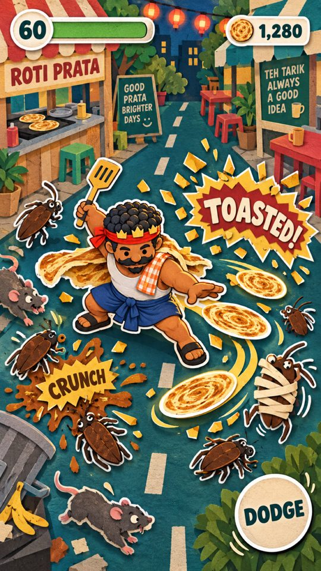
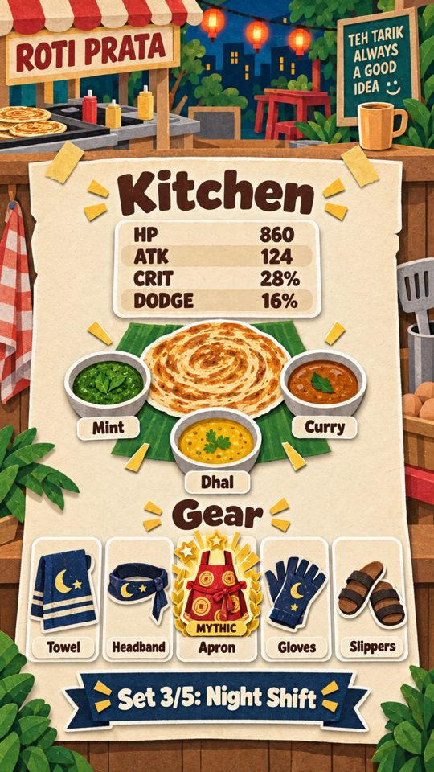
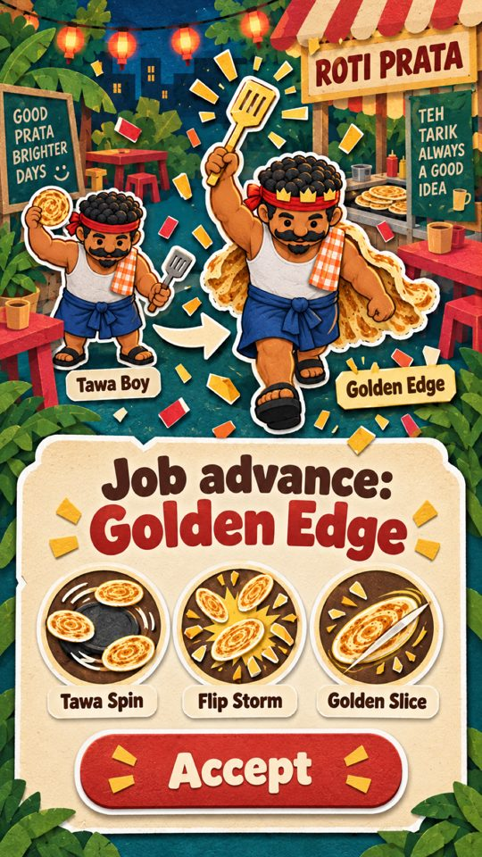

A tired prata man daydreams himself into a legend. Every night he flips his way from Tawa Boy to a Raja of the street, and his build is a recipe he keeps perfecting. Paper cut-out, hawker at night, crunchy to the bone.

Five pillars
How it looks in play
Codex key art in the target style: one paper material for characters, props, effects and menus.

Stall. Four stations on paper flags, Kannan in the middle, one big GO.

Run. A swarm around Golden Edge Kannan: CRUNCH, a curry splat, a TOASTED combo.

Kitchen. The whole build on one menu: roti, three katori dips, five gear, a set ribbon.

Job advance. A paper ceremony: new outfit, three new skills, Accept.
Job advancement
Kannan starts as Tawa Boy. At level 10 he picks a path; he advances again at 30 and 60. Every tier changes his outfit, adds a signature skill and a passive. Re-training at the Job Board is free.
Combos you can see
Every hit can leave one of four statuses. Two different statuses on the same pest trigger a named reaction. Each status has one colour and one shape, so it reads at a glance, even without colour.
Hit, crit, kill, splat, wrap
The effect pieces, all flat paper.
Gear that stacks
Five slots: towel, headband, apron, gloves, slippers. Rarity runs common, rare, epic, raja, mythic. Pieces enhance on the hot tawa (+1 to +10) and reroll their numbers. Sets share a colour family so Kannan visibly changes as a set fills.
Mythic items
One at a time. Each bends a rule of the game. Earned from shards dropped by the Grade Inspector spirit; never sold.
Builds to chase
Throwing, crunch and sound
Crazy throwing
Every roti throws its own way. Kosong spins flat, tissue whistles through a line, naan lobs and slaps down, murtabak bowls pests over, egg prata bounces off walls.
Flip throw every 3rd throw: a twirl, bigger, guaranteed status.
Catch-back: walk into a returning prata and the next one is double size.
Dodge spray: dashing through pests fires pratas behind you.
Sizzler: stand still 1.5 s and the tawa charges a burning throw.
Paper crunch
Hit: the pest squashes and snaps back, paper flecks fly.
Crit: a torn CRUNCH burst, golden flakes tumble and land.
Kill: the cut-out tips over flat and tears into confetti; coins hop out on paper springs.
Wet: curry splats drip, spread and dry into stains on the road.
Dough: pests sink into dough that stretches when they struggle and snaps when it breaks.
Sound and memory
Hits slap like dough on a tawa; crits crunch like the crisp edge of a prata; kills tear like paper.
The night: kopitiam radio, a hawker calling orders, cups clinking, void-deck football in the distance.
Music: cheerful thavil and nadaswaram flavoured chiptune, calmer at the stall.
Design: docs/plans/v2-concept.md and v2-spec.md in the repo. Art: Codex batch 4, ~/prata-raja-assets/v2 (86 images). Numbers are starting points for tuning.